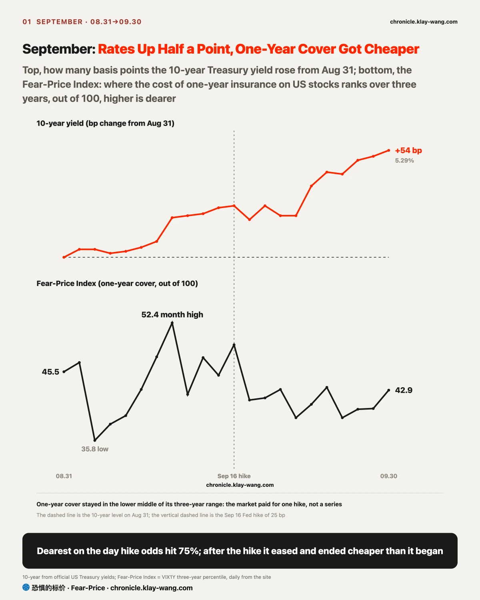
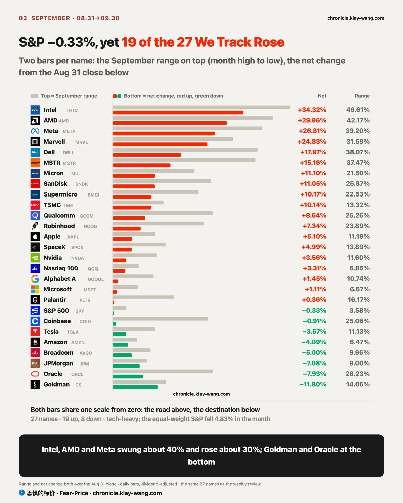
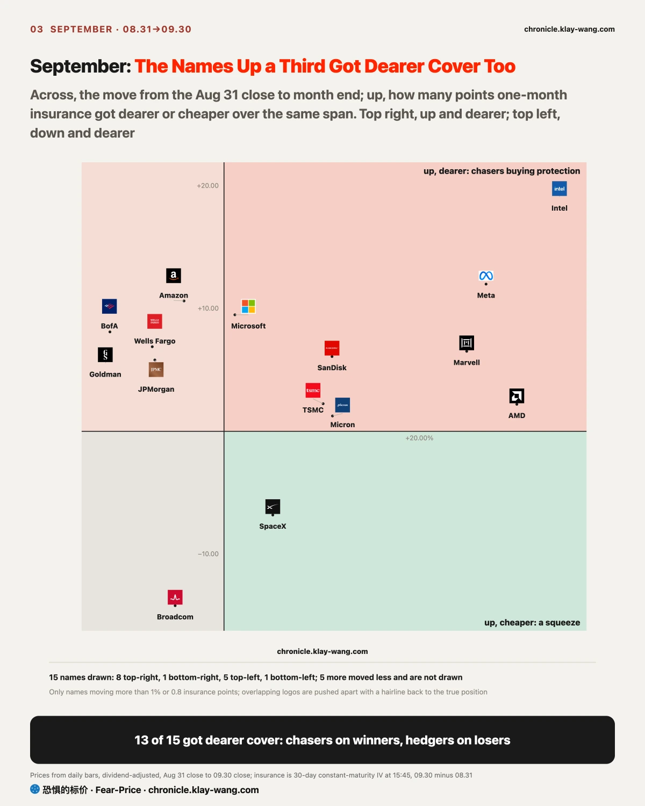
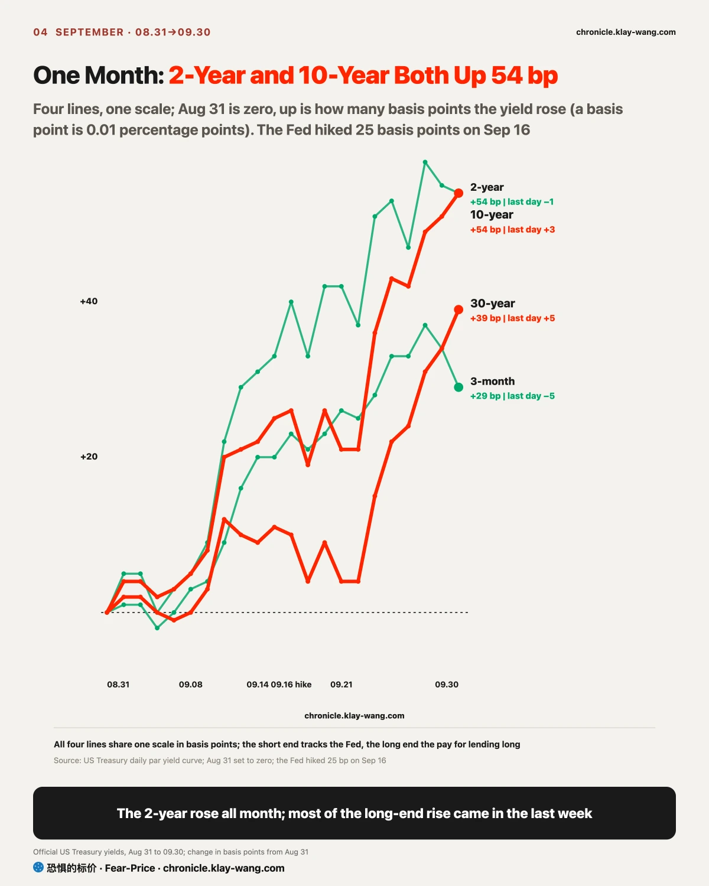
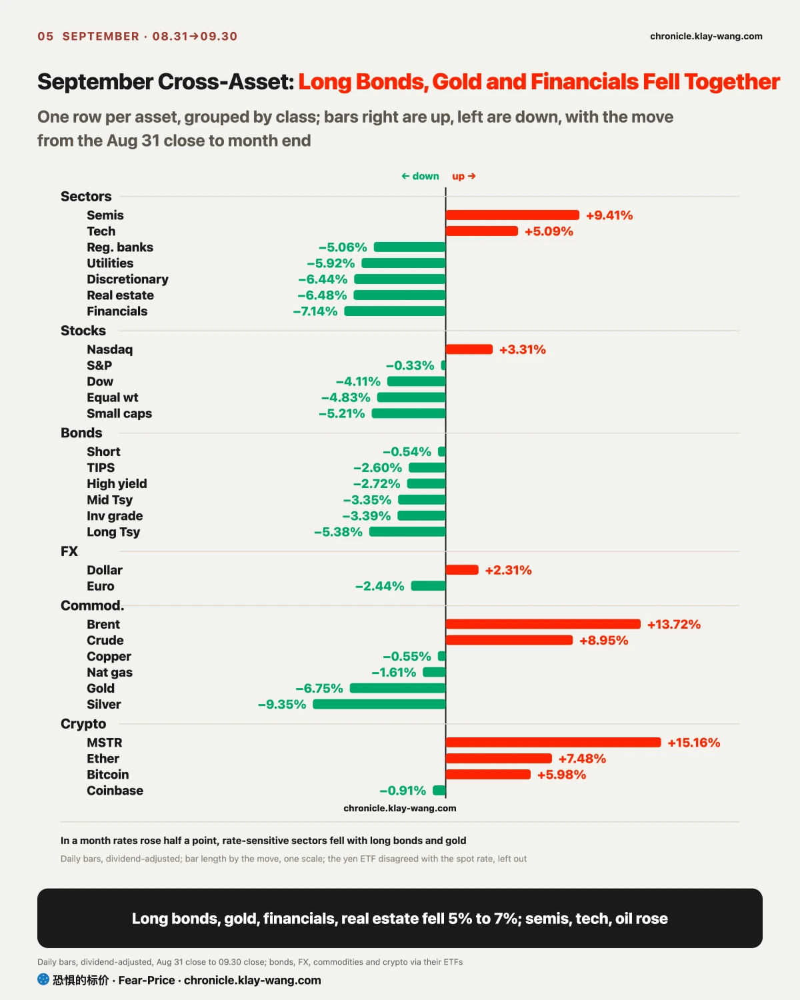
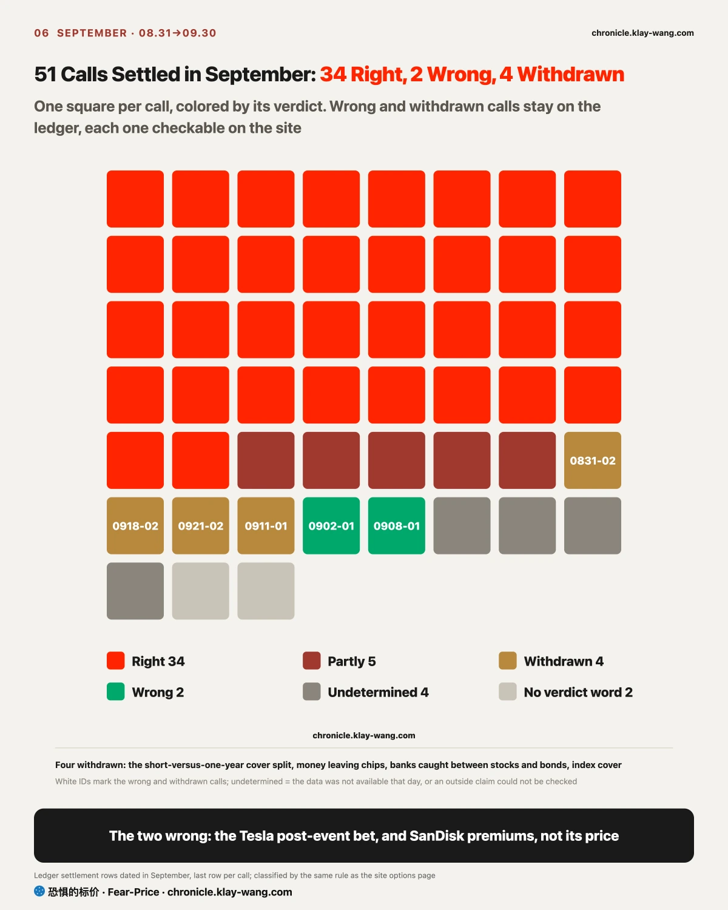

Fear-Price Index · 2026-09-30 · Reading 42.9/100: one-year volatility VIX1Y is 21.80, at the 42.9th percentile of the past three years; higher means more expensive. Daily ledger and method → chronicle.klay-wang.com · Please cite: Fear-Price Index
The cost of insuring US stocks for a year fell from 45.5 to 42.9 in September (out of 100, higher is dearer), in a month when the 10-year rate rose half a percentage point and the Fed hiked for the first time in three years. There were two reasons: the market paid for one hike only, dearest on September 10 when hike bets peaked and easing after the hike; and gains and losses inside the index cancelled out, so cover on the whole market was naturally cheap, and the risk stayed in single stocks.
For you, index protection is still cheap, while protecting single stocks costs more than in early September. If a second hike does come on October 28, one-year protection will likely have to catch up, and a new call on that is listed at the end.
The K Index is 1.887, below the August 31 final of 3.298; its low for the month was 1.54 on the hike day, when talk was gloomiest and the most people paid for protection. The closer K is to 1, the more people turn worry into paid protection; at month end it is far from 1, with plenty of worry in words and little money spent. On the month-end Fear & Greed reading, the VIX would need to rise above 30.8 for K to fall below 1. History at chronicle.klay-wang.com/kindex; the index at chronicle.klay-wang.com/fear-price.

The S&P 500 fell only 0.33% in September, but the stocks you hold most likely fell: weighted equally, the same stocks lost 4.83%, and small caps 5.21%. Money crowded into just two lines: chips, with the semiconductor ETF up 9.4%, first among all sectors, and Intel and AMD up about 30% each; and memory, with Micron, SanDisk and SK Hynix each up more than 10%. Among the Magnificent Seven only Meta jumped, up 27%, and Nvidia rose only 3.6%, so this chip rally was not led by it.
Behind both lines is one change: AI is moving from training models to doing actual work, and the hardware it uses is changing. After Meta launched its personal agent Muse on September 8, OpenAI, Google and Apple moved into the same kind of product; agents call tools and run tasks over and over, which runs on server CPUs, while the high-bandwidth memory AI servers need squeezed capacity and kept memory prices rising. Money chased these two new bottlenecks, and Meta itself was treated as the early leader in the agent race. Why they withstood rates is taken apart in the [Attribution] section below.
The cost of that concentration shows in insurance prices. Index cover got cheaper while cover on 13 of 15 names got dearer: risk moved into single stocks. Buyers who chased the 30% winners are insuring themselves, and holders of banks that fell 10% are adding cover. The Nasdaq beat small caps by 8.5 percentage points in September, and that concentration is what it earned; on September 30, quarter-end rebalancing sold stocks by weight and hit hardest exactly the big names holding up the index.

The two-year and 10-year Treasury yields both rose 54 basis points in September, with the 10-year at 5.29%, the highest since 2002. The numbers match, but different forces pushed them: the two-year tracks the Fed and had done more than 70% of its climb by the close on September 16, the day of the hike; 60% of the rise in the 10-year came in the last six trading days, when hike expectations were no longer what pushed it.
On September 29 oil fell 4% and consumer confidence dropped to its lowest since 2014; the two-year eased and the 10-year rose anyway. On September 30 inflation data came in softer than expected, and the 10-year rose again. Lenders handing over money for ten years are asking for extra compensation, worried about deficits, a growing supply of Treasuries and oil. The Fed cannot control that compensation. Mortgages follow the 10-year and will not come down even if the Fed does not hike in October; anyone waiting for rates to fall before borrowing should be ready to wait longer.
My read is that term compensation, not rate-hike expectations, is pushing the 10-year up. If at the October 1 close the two-year yield is back at 4.92% or higher and has risen more than the 10-year, that read no longer holds.

The split in September came down to a race: when rates rise, future earnings are worth less today, and only companies whose earnings grow faster than that discount hold up. My read is that this is mostly what separated the winners from the losers this month, with money flows and sentiment only amplifying it.
Chips and memory won on earnings. Micron fourth-quarter revenue rose 379% from a year earlier and next-quarter guidance beat again; AMD server CPUs are reportedly sold out for next year, as big companies expanding for agents pay for exactly these chips. With earnings growing this fast, an extra half point of discount from rates could not hold them down.
The losers were repriced as soon as rates rose. Assets valued on distant cash flows, with earnings that are not accelerating, fell first: real estate and utilities about 6% each, long bonds 5.4%, and non-yielding gold and silver more. Banks should benefit from a wider gap between short and long rates, but paper losses on the long bonds they hold came first, and financials fell 7%. Consumer discretionary took one more hit: oil rose about 10%, households kept spending by saving less, and money spent on gasoline is not spent elsewhere. The two-year had done more than 70% of its climb by the day of the hike, while the 10-year is still adding compensation, so the rate side is not done.
Money flows and options sat on the same side. Over the 25 trading days to September 29, the industrial and materials sector ETFs each saw net redemptions of nearly 4% of assets and energy 2%, with financials also seeing outflows; utilities instead took in net subscriptions of 4%, buyers reaching for defense on the dip. On chips, buyers chased and insured themselves at the same time, and the price of protection on Intel, Meta and AMD kept rising.
The exception points the same way: Nvidia earnings are rising too, yet it gained only 3.6% in September; its good news was already in the price, the same thing as Micron beating on everything without rising.
Whether a stock you hold can withstand high rates comes down first to whether its earnings are accelerating. If chip and memory guidance starts to slow in October earnings season while prices keep rising, this read no longer holds, and only money flows would be pushing prices.

Of 51 calls settled in September, 34 were right. The 2 wrong and the 4 withdrawn went wrong in the same place: we read a few days of money flows as a trend. On September 2 we wrote that the Tesla options money ahead of its event leaned toward a rise, and Tesla fell 5.92% on September 4; on September 8 we wrote that SanDisk was rising in premiums rather than price, and the premiums fell back the next day. The four withdrawn were the same: the split between short and one-year insurance, money leaving chips, banks caught between stocks and bonds, and fully invested holders buying index cover all turned around within days, and the money that left chips was back by September 17.
The reason lies in the market this month: money was concentrated in a few lines and moved quickly, so a few days of flows were easily erased the following week, and new calls in October will weigh how many contracts are still held the next day. Four more were undetermined, two because key data missed the day it had to be taken: the rule set in August did not hold, and from October each new call will write its last data day into the test. The other questions the August issue left for September point to one thing: September continued August, only narrower. Every call is on the options page at chronicle.klay-wang.com, and the wrong and withdrawn ones are not deleted or edited.
If you hold index funds: the index was held steady by a few names, already hit once by quarter-end rebalancing; if they stumble in earnings season, nothing else holds the index up. Index protection is cheap right now.
If you hold chips, memory or Meta: the biggest winners carry the dearest insurance; Micron beating on everything without rising says good news has started to stop buying gains.
If you hold banks, real estate or utilities: they are hit hardest by long rates, and as long as the 10-year stays above 5%, the pressure stays.
If you hold long bonds or gold: both fell 5 to 7 points in a month rates rose half a point; Treasuries out to one year and short bonds barely lost money.
October has two checkpoints, and a third comes right after. The September CPI on October 14 is the first: if the monthly rise in core inflation beats forecasts again, the October 28 meeting will likely hike once more; if not, hike bets will move to December. The November 3 midterm election is the third: long rates are rising on the compensation for lending long, driven by deficits and Treasury issuance, and the vote will give the first answer to how much voters will tolerate high rates and high prices. Historically, rates tend to rise before midterms and ease after, and stocks tend to rise after; but this time US growth rests on fiscal spending and AI investment, both of which depend on Congress, so post-election gridlock may not help.
For you, before these checkpoints it is hard to say long rates have peaked, so plan borrowing costs at high levels; for chips, memory and Meta, October earnings season is about whether guidance keeps accelerating. Watch oil too: crude exports through the Strait of Hormuz are back to prewar levels; if oil prices follow them down, pressure on rates and spending eases; if not, high oil plus high rates will crush demand first. The calls on the ledger are below.